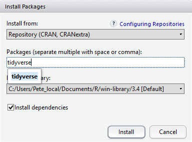
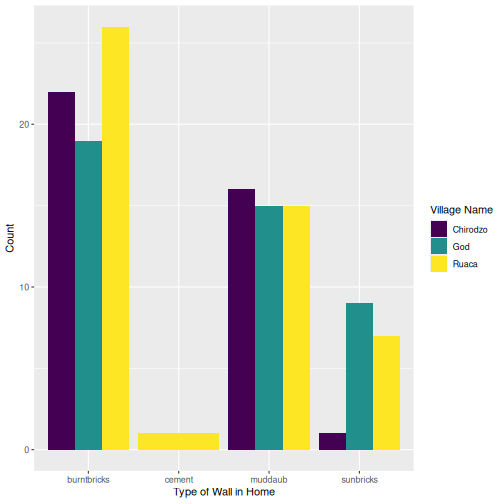

R Packages, Markdown болон Notebooks-н танилцуулга
Last updated on 2026-03-19 | Edit this page
Estimated time: 60 minutes
Overview
Questions
-
R packageгэж юу вэ? -
Rбагцуудыг хэрхэн суулгах вэ? -
R MarkdownбаR Notebooksгэж юу вэ? - Би
Rкодыг текст болон графиктай хэрхэн нэгтгэх вэ? - Би хэрхэн
.Rmdфайлыг.htmlболгон хөрвүүлэх вэ?
Objectives
-
R packageгэж юу болохыг ойлгоорой -
packagesтабыг ашиглан багцуудыг суулгана уу. -
Rкодыг ашиглан багцуудыг суулгана уу. -
R MarkdownболонR Notebooks-ийн үндсэн синтаксийг ойлгох
Хүлээн зөвшөөрөлт
Энэхүү семинарыг Дата мужааны хичээлүүдийн материалыг ашиглан
тохируулсан R for Social Scientists,
ялангуяа lesson 00-intro
болон lesson 06-rmarkdown.
Бусад материал
R packages гэж юу вэ?
R Packages нь үндсэн
нэгжүүд юм дахин давтагдах боломжтой R код. Эдгээр нь дахин
ашиглах боломжтой R функцүүдийн цуглуулга юм. жишээ
өгөгдөл, хэрхэн ашиглахыг тодорхойлсон баримт бичиг функцууд.
Үндсэн R болон багцуудын хооронд ямар ялгаа байдаг
вэ?
base R package
R-г хэлээр ажиллах боломжийг олгодог үндсэн функцуудыг
агуулсан:
- Арифметик
- Оролт/гаралт
- Програмчлалын үндсэн дэмжлэг гэх мэт
R програм хангамжийг base R багц суулгасан
үед түгээдэг. онд base R суулгацаас гадна 20,000 гаруй
суулгац бий R-ийн үйл ажиллагааг өргөтгөхөд ашиглаж болох
нэмэлт багцууд. Эдгээрийн ихэнхийг R хэрэглэгчид бичсэн
бөгөөд ашиглах боломжтой болгосон
Comprehensive R Archive Network-д байршуулсантай адил
төвлөрсөн хадгалах газруудад CRAN,
хүн бүр өөрийн R орчинд татаж аваад суулгах боломжтой.
CRAN
нь дэлхий даяар хадгалдаг ftp болон вэб серверүүдийн сүлжээ юм
R-д зориулсан код болон баримт бичгийн ижил, хамгийн
сүүлийн үеийн хувилбарууд.
R код болон packages табыг ашиглан
багцуудыг суулгаж байна
Бид энэ семинарт tidyverse болон here
багцуудыг ашиглах болно.
Та эдгээр багцуудыг командыг бичээд консолоос суулгаж болно
install.packages(), эсвэл packages табаас.
Бид консолоос tidyverse, багцаас here-г
суулгана. таб.
R
install.packages("tidyverse")
OUTPUT
The following package(s) will be installed:
- tidyverse [2.0.0]
These packages will be installed into "/home/rstudio/lesson/renv/profiles/lesson-requirements/renv/library/linux-ubuntu-noble/R-4.5/x86_64-pc-linux-gnu".
# Installing packages --------------------------------------------------------
- Installing tidyverse 2.0.0 ... OK [linked from cache]
Successfully installed 1 package in 5.9 milliseconds.Та packages-оос багц суулгасан эсэхийг харах боломжтой
таб (анхдагчаар баруун доод талд). Та мөн тушаал бичиж болно
installed.packages()-г консол руу оруулаад гаралтыг шалгана
уу.

Мөн packages табаас багцуудыг суулгаж болно.
packages дээр таб дээр Install дүрс дээр
товшоод багцын нэрийг бичиж эхлээрэй Та текст хайрцагт оруулахыг хүсч
байна. Таныг бичиж байх үед таны эхлэлд тохирсон багцууд тэмдэгтүүд доош
унадаг жагсаалтад гарч ирэх бөгөөд ингэснээр та сонгох боломжтой
тэд.

Install Packages цонхны доод талд
Install-ийг шалгах нүд байна хамаарал. Энэ нь анхдагчаар
тэмдэглэгдсэн байдаг бөгөөд энэ нь ихэвчлэн таны хүссэн зүйл юм. Багцууд
нь бусад зүйлд суулгасан функцуудыг ашиглах боломжтой (мөн хийдэг).
багцууд, тиймээс багцад агуулагдах функцүүдийн хувьд та зөв ажиллахын
тулд суулгаж байгаа бол шаардлагатай бусад багцууд байж болно тэдэнтэй
хамт суулгана. Install dependencies сонголт нь
баталгаажуулдаг ийм зүйл болдог гэж.
Дасгал хийх
Packages табыг ашиглан та tidyverse болон
хоёулаа байгаа гэдгээ баталгаажуулна уу here багцуудыг
суулгасан.
Багцын табыг доош гүйлгэн tidyverse руу очно уу. Та мөн
цөөн хэдэн зүйлийг бичиж болно тэмдэгтүүдийг хайлтын талбарт оруулна.
tidyverse багц нь үнэхээр a ggplot2 болон
dplyr зэрэг багц багц бусад багцуудыг зөв ажиллуулахыг
шаарддаг. Эдгээр бүх багцууд байх болно автоматаар суулгана. Өмнө нь
ямар багц байсан бэ гэдгээс хамаарна Таны R орчинд суулгасан бол
tidyverse-г суулгаж болно маш хурдан эсвэл хэдэн минут
болно. Суулгац үргэлжилж байх үед, түүний явцтай холбоотой мессежийг
консол дээр бичих болно. Та байгаа бүх багцыг харах боломжтой болно
суулгасан.
Суулгах процесс нь CRAN репозитор руу ханддаг тул танд
хэрэгтэй болно багцуудыг суулгах интернет холболт.
Мөн бусад репозитороос багц суулгах боломжтой Github
эсвэл локал файлын системийн хувьд бид эдгээрийг үзэхгүй Энэ семинар
дахь сонголтууд.
R Markdown болон R Notebooks
R Markdown нь танд ямар ч саадгүй хийх боломжийг олгодог
уян хатан төрлийн баримт бичиг юм гүйцэтгэх боломжтой R код
болон түүний гаралтыг тексттэй нэг дор нэгтгэнэ баримт бичиг.
R Notebook нь R Markdown-д зориулсан тусгай
интерактив гүйцэтгэх горим юм (Rmd) баримт бичиг. Кодын
хэсгүүдийг бие даан, интерактив байдлаар гүйцэтгэдэг
RStudio засварлагч дотор.
R Markdown баримтыг олон статик болон хувиргах боломжтой
PDF (.pdf), Word (.docx) болон HTML зэрэг динамик гаралтын форматууд
(.html).
Сайн бэлтгэсэн R Markdown эсвэл Notebook
баримт бичгийн үр өгөөж дүүрэн байна давтах чадвар. Хэрэв та өгөгдөл
анзаарсан бол энэ нь бас гэсэн үг юм транскрипцийн алдаа, эсвэл та
шинжилгээндээ илүү их мэдээлэл нэмэх боломжтой, Та тайланд өөрчлөлт
оруулахгүйгээр дахин эмхэтгэх боломжтой болно бодит баримт бичиг.
R Notebook файл үүсгэж байна
RStudio-д шинэ R Markdown документ
үүсгэхийн тулд File -> New File -> R Notebook дээр
товшино уу. Танаас шаардлагатай багцуудыг суулгахыг шаардаж магадгүй Та
үүнийг анх удаа хийж байна.
R Notebook-н үндсэн бүрэлдэхүүн хэсгүүд
YAML Толгой хэсэг
Гаралтыг удирдахын тулд YAML (YAML
Тэмдэглэгээний хэл биш) толгой хэсгийг ашиглана. хэрэгтэй:
---
title: "My Awesome Report"
output: html_document
---Гарчиг нь эхэнд байгаа гурван зураасаар тодорхойлогддог
(---) ба төгсгөлд байгаа гурван зураас
(---).
YAML-д шаардлагатай цорын ганц талбар нь
output: бөгөөд энэ нь таны хүссэн гаралтын төрөл. Энэ нь
html_document байж болно, a pdf_document,
эсвэл word_document. Бид HTML хэлээр эхлэх болно
баримтжуулж, дараа нь бусад хувилбаруудыг хэлэлцэнэ.
Гарчигны дараа, баримт бичгийн үндсэн хэсгийг эхлүүлэхийн тулд та
бичиж эхэлнэ YAML толгой хэсгийн төгсгөлийн дараа (жишээ
нь, хоёр дахь ----ийн дараа).
Markdown синтакс
Markdown бол формат нэмэх боломжийг олгодог түгээмэл
тэмдэглэгээний хэл юм болд, налуу,
code зэрэг текстийн элементүүд. The форматлах нь
тэмдэглэгээ (.md) баримт бичигт шууд харагдахгүй, Та Word баримтаас харж
байгаа шиг. Харин та Markdown синтакс нэмнэ текст рүү,
дараа нь өөр өөр файл болгон хөрвүүлэх боломжтой Markdown
синтаксийг орчуулах. Markdown нь ашигтай учраас ашигтай
хөнгөн, уян хатан, платформоос хамааралгүй.
RStudio нь форматыг бодит цагийн урьдчилан харах
боломжийг олгодог- дээр дарна уу Visual чихийг дарж
Markdown-ийг, эсвэл Source-г түүгээр түүгээр
дарна уу. Markdown.
Гарчиг
Текстийн өмнө байрлах # нь Markdown-д энэ
текст нь a гарчиг. Илүү олон # нэмэх нь гарчгийг
жижигрүүлнэ, өөрөөр хэлбэл нэг # нь эхний түвшний гарчиг,
хоёр ## нь хоёрдугаар түвшний гарчиг гэх мэт 6-р түвшний
гарчиг.
# Title
## Section
### Sub-section
#### Sub-sub section
##### Sub-sub-sub section
###### Sub-sub-sub-sub section(дээрх нь бас ашиглагдаж байгаа бол зөвхөн түвшинг ашиглана уу)
Форматлаж байна
Үгийг давхараар хүрээлүүлснээр та аливаа зүйлийг
зоригтой болгож чадна од, **bold**, эсвэл
давхар доогуур зураас, __bold__; болон налуу
зураас ганц од, *italics*, эсвэл нэг доогуур зураас
ашиглан, _italics_.
Та мөн болд болон налуу-г хослуулан ямар
нэгэн зүйл бичиж болно үнэхээр гурвалсан
одтой, ***really*** эсвэл чухал доогуур зураас,
___really___; мөн, хэрэв та зоригтой санагдаж байвал
(зохистой үг хэллэг) та од болон доогуур зураасыг хослуулан ашиглаж
болно. **_really_**, **_really_**.
code-type фонт үүсгэхийн тулд үгийг арын тэмдэгээр
хүрээлээрэй. `code-type`.
Кодын хэсгүүд
Кодын хэсгүүд нь R кодыг бичиж, гүйцэтгэх блокууд юм. Тэд эхэлдэг
```{r} and end with ```-тай.
Хэсэг оруулахын тулд Insert товчлуурын хажууд байрлах
жижиг сумыг товшино уу засварлагч хэрэгслийн мөрийг сонгоод
R-г сонгоно уу.
Chunk-г ажиллуулахын тулд баруун талд байрлах жижиг ногоон тоглох
сумыг дарна уу хэсэг, эсвэл Windows болон
Linux дээр Ctrl+Alt+I гарын
товчлолыг (эсвэл Mac дээр
Cmd+Option+I) ашиглана уу.
Notebook-аа буулгаж, хуваалцаарай
Шинжилгээ хийж дууссаны дараа та эцсийн өнгөлгөөг үүсгэж болно тайлан.
RStudio засварлагчийн самбар дээрх Preview
(эсвэл Render) товчийг дарна уу.
Энэ нь бие даасан HTML файлыг (эсвэл PDF/Word баримтаас хамаарч)
үүсгэдэг YAML толгой хэсэгт байгаа тохиргоонууд дээр)
өгүүллийг хоёуланг нь багтаасан болно текст болон эцсийн үр дүн.
Та энэ гаралтын файлыг бусадтай хуваалцахгүй байсан ч хялбархан
хуваалцаж болно R ашиглах.
Одоо бид хэд хэдэн зүйлийг сурсан тул энэ нь ашигтай байж магадгүй юм тэдгээрийг хэрэгжүүлэх.
Өөрийн шинэ R Notebook үүсгэнэ үү
Шинэ R Notebook:
Click File -> New File -> R Notebook нээж эхэл
Та шинэ R Notebook-г нээхэд зарим тайлбар текст гарч
ирнэ. Энэ устгаж болох тул та өөрийн текст болон кодыг оруулах
боломжтой.
Өгөгдлийг татаж авах
Бид SAFI_clean.csv нэртэй өгөгдлийн багцыг ашиглах
болно. Шууд татаж авах Энэ файлын холбоос нь: https://github.com/datacarpentry/r-socialsci/blob/main/episodes/data/SAFI_clean.csv.
Энэ өгөгдөл нь SAFI Survey Results-ын бага зэрэг
цэвэршүүлсэн хувилбар юм дээр боломжтой figshare.
Эхлээд бид үүнийг хадгалахын тулд data нэртэй шинэ
хавтас үүсгэх хэрэгтэй өгөгдлийн багц. Файлын хэсэг рүү очоод
data нэртэй шинэ хавтас үүсгэнэ үү cleaned
болон raw гэж нэрлэгддэг хоёр дэд хавтас.
intro_r
│
└── scripts
│
└── data
│ └── cleaned
│ └── raw
│
└─── images
│
└─── documentsТа үүнд ашигласан SAFI_clean.csv датасетийг татаж авах
боломжтой семинарыг GitHub холбоосоос эсвэл R-аас авна уу.
Та файлыг эндээс татаж авах боломжтой энэ GitHub link
мөн үүнийг data/raw лавлахдаа SAFI_clean.csv
болгон хадгална уу үүсгэсэн. Эсвэл үүнийг хуулж буулгах замаар
R-с шууд хийж болно таны консол дээр:
download.file( "https://raw.githubusercontent.com/datacarpentry/r-socialsci/main/episodes/data/SAFI_clean.csv", "data/raw/SAFI_clean.csv", mode = "wb" )
Танилцуулга хэсгийг эхлүүлнэ үү
Introduction нэртэй гарчиг хийж, тайлбар бичвэр оруулна
уу таны тайланд байх өгөгдлийн багцын талаар. Жишээ нь:
Энэ тайланд SAFI-ын хамт
tidyverse багцыг ашигладаг өгөгдлийн багц
бөгөөд үүнд дараах баганууд багтана:
- village
- interview_date
- no_members
- years_liv
- respondent_wall_type
- roomsТа мөн тоонуудыг ашиглан дараалсан жагсаалтыг үүсгэж болно:
1. village
2. interview_date
3. no_members
4. years_liv
5. respondent_wall_type
6. roomsМөн tab-доголоор үүрлэсэн зүйлс:
- village
- Name of village
- interview_date
- Date of interview
- no_members
- How many family members lived in a house
- years_liv
- How many years respondent has lived in village or neighbouring
village
- respondent_wall_type
- Type of wall of house
- rooms
- Number of rooms in houseMarkdown синтаксийг илүү ихийг мэдэхийг хүсвэл the following reference guide-с
үзнэ үү.
Одоо бид preview дээр дарж баримтыг
HTML болгон хувиргаж болно. Эх сурвалжийн дээд хэсэгт байрлах товчлуур
(зүүн дээд талд). Хэрэв та хадгалаагүй бол Баримт бичиг хараахан байгаа
бол та preview-д оролцох үед үүнийг
хийхийг сануулах болно анх удаа.
R Markdown тайлан бичиж байна
Одоо бид харуулахын тулд R код нэмнэ (бид энэ талаар
илүү ихийг мэдэх болно Энэ кодыг дараагийн семинарт оруулна уу!).
Эхлээд бид tidyverse ачаалагдсан
эсэхийг шалгах хэрэгтэй. Энэ нь хангалттай биш юм
tidyverse-г консолоос ачаалснаар бид
үүнийг өөрийн дотор ачаалах шаардлагатай болно R Notebook.
Манай өгөгдөлд мөн адил хамаарна. Эдгээрийг ачаалахын тулд бид Манай
баримт бичгийн дээд талд (доорх) “кодын хэсэг” үүсгэх шаардлагатай болно
YAML толгой).
Кодын хэсгийг Code \> Insert Chunk дээр дарж эсвэл
дарж оруулж болно гарын товчлолыг ашиглан
Ctrl+Alt+I Windows болон
Linux, мөн Cmd+Option+I дээр
Mac дээр.
Кодын синтакс нь:
R Markdown баримт бичиг нь тайлангийн хэсэг биш гэдгийг
мэддэг хэсгийг эхлүүлж дуусгадаг (```) -аас. Энэ нь бас
мэддэг Хэсэг доторх код нь r доторх R код байна буржгар
хаалт ({}). r-ийн дараа та кодын хэсэгт нэр
нэмж болно . Хэсэг хэсгийг нэрлэх нь сонголттой боловч санал болгож
байна. Хэсэг бүрийн нэр байх ёстой өвөрмөц бөгөөд зөвхөн үсэг, тоон
тэмдэгтүүд болон - агуулсан.
tidyverse болон манай
SAFI_clean.csv файлыг ачаалахын тулд бид дараахыг оруулна.
chunk болон үүнийг “тохиргоо” гэж нэрлэнэ. Учир нь бид энэ код эсвэл
гаралтыг хүсэхгүй байна Бидний үзүүлсэн HTML баримт бичигт харуулахын
тулд бид include = FALSE-г нэмнэ кодын хэсэгчилсэн нэрний
дараах сонголт ({r setup, include = FALSE}).
MARKDOWN
```{r setup, include = FALSE}
library(tidyverse)
library(here)
interviews <- read_csv(here("data/raw/SAFI_clean.csv"), na = "NULL")
```Чухал тэмдэглэл!
.Rmd баримт бичигт өгсөн файлын замууд, жишээ нь. .csv файлыг ачаалах, .Rmd баримт бичигтэй харьцангуй бөгөөд төслийн үндэс биш.
Бид файлыг хадгалахын тулд here() функцийг ашиглахыг
зөвлөж байна таны төсөлд нийцсэн замууд.
Хүснэгт оруулах
Дараа нь бид өрхийн дундаж хэмжээг харуулсан хүснэгт үүсгэх болно
village болон memb_assoc-р бүлэглэсэн. Бид
үүнийг шинээр бий болгосноор хийж чадна кодын хэсэг бөгөөд үүнийг
“interview-tbl” гэж нэрлэнэ. Эсвэл та гаргаж ирж болно илүү бүтээлч зүйл
(зүгээр л нэрлэх дүрмийг баримтлахаа санаарай).
Бид дараа нь энэ кодын талаар илүү ихийг мэдэх болно!
Гаралтыг харахын тулд дээд талд байгаа ногоон гурвалжин бүхий кодын
хэсгийг ажиллуулна уу хэсгийн баруун буланд эсвэл гарын товчлолоор:
Windows болон Linux дээрх
Ctrl+Alt+C, эсвэл Mac дээрх
Cmd+Option+C.
Хүснэгтийг манай гаралтын баримт бичигт сайн форматласан эсэхийг
шалгахын тулд бид knitr багцаас
kable() функцийг ашиглах шаардлагатай болно. The
kable() функц нь таны R кодын гаралтыг авч a болгон сүлждэг
сайхан харагдаж байна HTML хүснэгт. Та мөн өөр өөр талуудыг зааж өгч
болно хүснэгт, жишээ нь. баганын нэр, гарчиг гэх мэт.
Хүссэн гаралтыг авахын тулд кодын хэсгийг ажиллуулна уу.
R
interviews %>%
filter(!is.na(memb_assoc)) %>%
group_by(village, memb_assoc) %>%
summarize(mean_no_membrs = mean(no_membrs)) %>%
knitr::kable(caption = "We can also add a caption.",
col.names = c("Village", "Member Association",
"Mean Number of Members"))
| Village | Member Association | Mean Number of Members |
|---|---|---|
| Chirodzo | no | 8.062500 |
| Chirodzo | yes | 7.818182 |
| God | no | 7.133333 |
| God | yes | 8.000000 |
| Ruaca | no | 7.178571 |
| Ruaca | yes | 9.500000 |
Олон төрлийн R багцуудыг хүснэгт үүсгэхэд ашиглаж болно.
Зарим нь илүү өргөн хэрэглэгддэг сонголтуудыг доорх хүснэгтэд
жагсаав.
| Name | Creator(s) | Description |
|---|---|---|
| condformat | Oller Moreno (2022) | Apply and visualize conditional formatting to data frames in R. It renders a data frame with cells formatted according to criteria defined by rules, using a tidy evaluation syntax. |
| DT | Xie et al. (2023) | Data objects in R can be rendered as HTML tables using the JavaScript library ‘DataTables’ (typically via R Markdown or Shiny). The ‘DataTables’ library has been included in this R package. |
| formattable | Ren and Russell (2021) | Provides functions to create formattable vectors and data frames. ‘Formattable’ vectors are printed with text formatting, and formattable data frames are printed with multiple types of formatting in HTML to improve the readability of data presented in tabular form rendered on web pages. |
| flextable | Gohel and Skintzos (2023) | Use a grammar for creating and customizing pretty tables. The following formats are supported: ‘HTML’, ‘PDF’, ‘RTF’, ‘Microsoft Word’, ‘Microsoft PowerPoint’ and R ‘Grid Graphics’. ‘R Markdown’, ‘Quarto’, and the package ‘officer’ can be used to produce the result files. |
| gt | Iannone et al. (2022) | Build display tables from tabular data with an easy-to-use set of functions. With its progressive approach, we can construct display tables with cohesive table parts. Table values can be formatted using any of the included formatting functions. |
| huxtable | Hugh-Jones (2022) | Creates styled tables for data presentation. Export to HTML, LaTeX, RTF, ‘Word’, ‘Excel’, and ‘PowerPoint’. Simple, modern interface to manipulate borders, size, position, captions, colours, text styles and number formatting. |
| pander | Daróczi and Tsegelskyi (2022) | Contains some functions catching all messages, ‘stdout’ and other useful information while evaluating R code and other helpers to return user specified text elements (e.g., header, paragraph, table, image, lists etc.) in ‘pandoc’ markdown or several types of R objects similarly automatically transformed to markdown format. |
| pixiedust | Nutter and Kretch (2021) | ‘pixiedust’ provides tidy data frames with a programming interface intended to be similar to ’ggplot2’s system of layers with fine-tuned control over each cell of the table. |
| reactable | Lin et al. (2023) | Interactive data tables for R, based on the ‘React Table’ JavaScript library. Provides an HTML widget that can be used in ‘R Markdown’ or ‘Quarto’ documents, ‘Shiny’ applications, or viewed from an R console. |
| rhandsontable | Owen et al. (2021) | An R interface to the ‘Handsontable’ JavaScript library, which is a minimalist Excel-like data grid editor. |
| stargazer | Hlavac (2022) | Produces LaTeX code, HTML/CSS code and ASCII text for well-formatted tables that hold regression analysis results from several models side-by-side, as well as summary statistics. |
| tables | Murdoch (2022) | Computes and displays complex tables of summary statistics. Output may be in LaTeX, HTML, plain text, or an R matrix for further processing. |
| tangram | Garbett et al. (2023) | Provides an extensible formula system to quickly and easily create production quality tables. The processing steps are a formula parser, statistical content generation from data defined by a formula, and rendering into a table. |
| xtable | Dahl et al. (2019) | Coerce data to LaTeX and HTML tables. |
| ztable | Moon (2021) | Makes zebra-striped tables (tables with alternating row colors) in LaTeX and HTML formats easily from a data.frame, matrix, lm, aov, anova, glm, coxph, nls, fitdistr, mytable and cbind.mytable objects. |
Хэсэг гаралтыг тохируулах
Кодоос урьдчилан сэргийлэхийн тулд include = FALSE-г
кодын хэсэг болгон ашиглахыг бид дурдсан болон сүлжмэл баримт бичигт
хэвлэхээс гарна. Нэмэлт байдаг -д кодын хэсгүүдийг хэрхэн харуулахыг
өөрчлөх боломжтой сонголтууд гаралтын баримт бичиг. Сонголтуудыг дараа
нь кодын хэсэгт оруулна chunk-name ба таслалаар
тусгаарлагдсан, жишээлбэл.
{r chunk-name, eval = FALSE, echo = TRUE}.
| Option | Options | Output |
|---|---|---|
eval |
TRUE or FALSE
|
Whether or not the code within the code chunk should be run. |
echo |
TRUE or FALSE
|
Choose if you want to show your code chunk in the output document.
echo = TRUE will show the code chunk. |
include |
TRUE or FALSE
|
Choose if the output of a code chunk should be included in the
document. FALSE means that your code will run, but will not
show up in the document. |
warning |
TRUE or FALSE
|
Whether or not you want your output document to display potential warning messages produced by your code. |
message |
TRUE or FALSE
|
Whether or not you want your output document to display potential messages produced by your code. |
fig.align |
default, left, right,
center
|
Where the figure from your R code chunk should be output on the page |
Дасгал хийх
Кодтой хэсэг дэх өөр өөр сонголтуудыг ашиглан тоглоорой Хүснэгтээс сонголт бүр нь гаралтад юу хийхийг харна уу.
Хэрэв та eval = FALSE болон
echo = FALSE-ийг ашиглавал яах вэ? юу вэ Энэ болон
include = FALSE хоёрын ялгаа юу?
{r eval = FALSE, echo = FALSE}-р хэсэг үүсгээд дараа нь
үүсгэ харьцуулахын тулд {r include = FALSE}-тай өөр нэг
хэсэг. eval = FALSE болон echo = FALSE нь
кодыг хэсэг болгон ажиллуулахгүй, кодыг харуулахгүй сүлжмэл баримт
бичигт. Кодын хэсэг нь үндсэндээ байхгүй хэзээ ч ажиллуулж байгаагүй тул
буулгасан баримт бичиг. Харин include = FALSE байх болно
кодыг ажиллуулж, дараа ашиглахын тулд гаралтыг хадгална.
Шугамын R код
Одоо бид R кодыг ашиглан тодорхой тайлбарлах болно
статистик. In-line R кодыг ашиглахын тулд бид өөрсдийнхөө
арын тэмдэгтүүдийг ашигладаг Markdown хэсэгт ашиглагдаж,
r-ээр биднийг мөн гэдгийг зааж өгсөн R-код үүсгэх. Мөрийн
код болон кодын хэсэг хоёрын ялгаа арын тэмдэгтүүдийн тоо юм. Шугамын
R код нь нэг буцах тэмдэг ашигладаг (`r`),
харин кодын хэсэг нь гурван арын тэмдэг ашигладаг
(```r```).
Жишээлбэл, өнөөдрийн огноо `r Sys.Date()`, байх болно
дараах байдлаар үзүүлсэн: өнөөдрийн огноо 2026-03-19.
Код нь гаралтын баримт бичигт өнөөдрийн огноог харуулах болно (за,
техникийн хувьд баримт бичгийг хамгийн сүүлд сүлжсэн эсвэл урьдчилан
үзсэн огноо).
R кодыг ашиглах хамгийн сайн арга бол кодын хэмжээг багасгах явдал юм кодын гаралтыг бэлтгэх замаар шугаман гаралтыг гаргах хэрэгтэй хэсгүүд. Бид дундаж өрхийг танилцуулах сонирхолтой байна гэж бодъё тосгон дахь хэмжээ.
R
# create a summary data frame with the mean household size by village
mean_household <- interviews %>%
group_by(village) %>%
summarize(mean_no_membrs = mean(no_membrs))
# and select the village we want to use
mean_chirodzo <- mean_household %>%
filter(village == "Chirodzo")
Одоо бид тосгон бүрийн арга хэрэгслийн талаар мэдээлэл өгөх боломжтой. мөн дундаж утгыг шугамын R-код болгон оруулна. Жишээ нь:
Чиродзо тосгоны өрхийн дундаж хэмжээ
`r round(mean_chirodzo$mean_no_membrs, 2)` байна
болдог…
Чиродзо тосгоны өрхийн дундаж хэмжээ 7.08.
Бид бодит утгуудын оронд мөрийн R кодыг ашиглаж байгаа
тул бид Хэрэв бид автоматаар шинэчлэгдэх динамик баримт бичгийг үүсгэсэн
өгөгдлийн багц болон/эсвэл кодын хэсгүүдэд өөрчлөлт оруулах.
Талбай
Эцэст нь бид бас талбайг оруулах тул бидний баримт бичиг арай илүү байна өнгөлөг, арай уйтгартай. Бид ашиглах код үүсгэх болно хуйвалдаан.
R
interviews_plotting <- interviews %>%
## pivot wider by items_owned
separate_rows(items_owned, sep = ";") %>%
## if there were no items listed, changing NA to no_listed_items
replace_na(list(items_owned = "no_listed_items")) %>%
mutate(items_owned_logical = TRUE) %>%
pivot_wider(names_from = items_owned,
values_from = items_owned_logical,
values_fill = list(items_owned_logical = FALSE)) %>%
## pivot wider by months_lack_food
separate_rows(months_lack_food, sep = ";") %>%
mutate(months_lack_food_logical = TRUE) %>%
pivot_wider(names_from = months_lack_food,
values_from = months_lack_food_logical,
values_fill = list(months_lack_food_logical = FALSE)) %>%
## add some summary columns
mutate(number_months_lack_food = rowSums(select(., Jan:May))) %>%
mutate(number_items = rowSums(select(., bicycle:car)))
R
interviews_plotting %>%
ggplot(aes(x = respondent_wall_type)) +
geom_bar(aes(fill = village))

Мөн бид fig.cap гэсэн хэсэгчилсэн сонголтоор тайлбар
үүсгэж болно.
R
interviews_plotting %>%
ggplot(aes(x = respondent_wall_type)) +
geom_bar(aes(fill = village), position = "dodge") +
labs(x = "Type of Wall in Home", y = "Count", fill = "Village Name") +
scale_fill_viridis_d() # add colour deficient friendly palette

Бусад гаралтын сонголтууд
Та R Markdown-ыг PDF эсвэл Word документ (бусад) болгон
хөрвүүлэх боломжтой. Preview товчлуурын
хажууд байрлах жижиг гурвалжин дээр дарж a авна уу унадаг цэс. Эсвэл та
pdf_document эсвэл word_document-г оруулж
болно файлын анхны толгой хэсэг.
---
title: "My Awesome Report"
author: "Author name"
date: ""
output: word_document
---Жич: PDF баримт үүсгэх
.pdf баримт бичгийг үүсгэхийн тулд нэмэлт программ
суулгах шаардлагатай байж магадгүй. R багц tinytex нь энэ
үйл явцыг хийхэд туслах зарим хэрэгслээр хангадаг R хэрэглэгчдэд илүү
хялбар. tinytex суулгасан бол ажиллуул
tinytex::install_tinytex() шаардлагатай программ хангамжийг
суулгана уу (та Үүнийг зөвхөн нэг удаа хийх хэрэгтэй) дараа нь
Knit-г pdf tinytex рүү
оруулах үед нэмэлт LaTeX багцуудыг автоматаар илрүүлж суулгана pdf
баримт бичгийг гаргахад шаардлагатай. Дэлгэрэнгүй мэдээллийг tinytex website
дээрээс авна уу.
Тайлбар: R Markdown файлд ишлэл
оруулж байна
Үүнийг ашиглан R Markdown файлд ишлэл оруулах боломжтой
засварлагч хэрэгслийн самбар. Засварлагч хэрэгслийн самбар нь нийтлэг
харагддаг форматыг агуулдаг текст засварлагчдад ихэвчлэн харагддаг
товчлуурууд (жишээ нь, тод, налуу товчлуурууд). Хэрэгслийн самбарт
тохиргоо унадаг цэсийг ашиглан хандах боломжтой (хажуу
Preview унадаг цэс) Use Visual Editor-ийг
сонгоно уу Crtl+Shift+F4 товчлолоор хандах
боломжтой. Эндээс, дарна уу Insert нь
Citation-ийг сонгохыг зөвшөөрдөг (товчлол:
Crtl+Shift+F8). Жишээлбэл,
From DOI дотор 10.1007/978-3-319-24277-4-г
хайж байна оруулах нь ggplot2
[@wickham2016]-ийн ишлэлийг өгөх болно. Энэ мөн
‘references.bib’ доторх ишлэл(үүд)-ийг одоогийн байдлаар хадгалах болно
ажлын лавлах. Дэлгэрэнгүйг R Studio website-д
зочилно уу мэдээлэл. Зөвлөмж: холбогдох багцаас ишлэлийн мэдээллийг авах
citation("package") ашиглан хийж болно.
Нөөц
R Markdownбаримт бичигR Markdown cheat sheetGetting started with R MarkdownIntroduction to R Markdown-
R Markdown: The Definitive Guide(Rstudioбагийн ном)
-
install.packages()ашиглан багц (номын сан) суулгах - Багцуудыг ачаалахын тулд
library()ашиглана уу -
R Markdownнь хуулбарлах баримт бичиг үүсгэхэд хэрэгтэй хэл юм текст болон гүйцэтгэх боломжтойRкодыг хослуулсан - Гаралтын баримт бичгийн форматыг хянахын тулд бөөн сонголтуудыг зааж өгнө үү